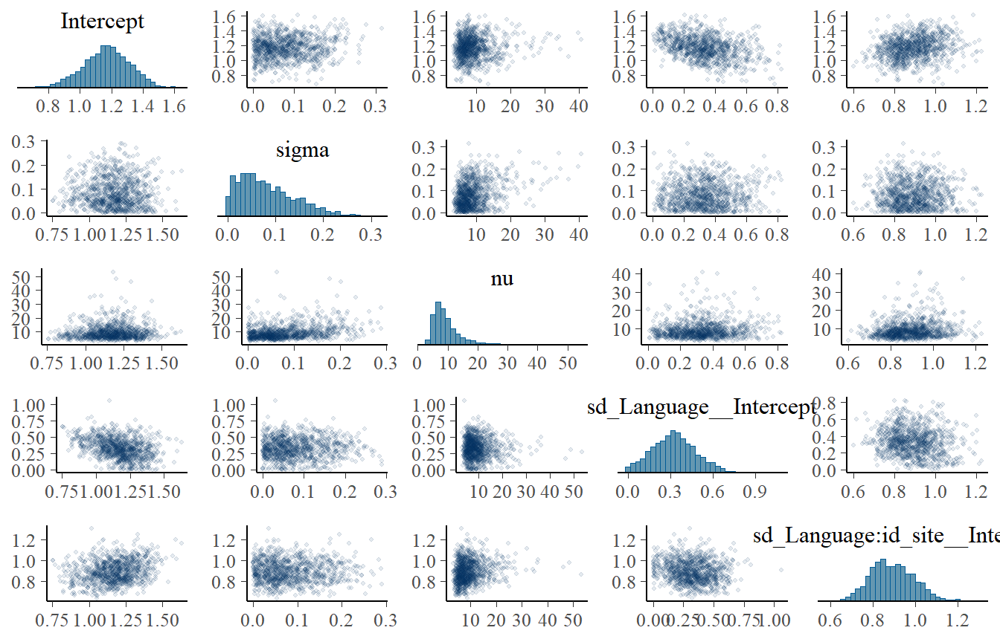

Show the code
library(brms)
library(tidyverse)
library(here)
# library(renv)
library(tidybayes)
#library(RoBMA)
#library(osfr)
library(bayesplot)
#library(pander)
library(knitr)
set.seed(35032)Björn S. Siepe ![]()
Matthias Kloft
Semih Can Aktepe
Daniel W. Heck
Load the necessary packages and set the seed for reproducibility.
library(brms)
library(tidyverse)
library(here)
# library(renv)
library(tidybayes)
#library(RoBMA)
#library(osfr)
library(bayesplot)
#library(pander)
library(knitr)
set.seed(35032)The authors used relatively unorthodox sampler settings by choosing an adapt_delta of 0.99 and a max_treedepth of 20. We will compare fitting the models selected as best by the authors to the same models with more standard sampler settings, as this might give us an insight into potential issues with model complexity.
The authors selected the model with language, age, task & environment as predictors as the best model.
We fit the model with typical settings on the first dataset to diagnose what is going wrong
data_F0_multiple_final <- readRDS(here("data","data_F0_multiple_final.RData"))baseline_te <- bf(Effect_Size | se(Effect_Size_se) ~ 1 + Age_months +
Language + Environment + Task + (1 | Language/id_site/measurement_num))
priors1 <- c(brms::prior(normal(0, 2.5), class = Intercept),
brms::prior(normal(1, 1), class = sd),
brms::prior(normal(0, 1), class = b),
brms::prior(normal(0, 0.05), class = b, coef = "Age_months"),
brms::prior(gamma(2, 0.1), class = nu))
F0_task_environment_language_age_m_sampler <-
brm(
baseline_te,
save_pars = save_pars(all = TRUE),
data = data_F0_multiple_final[[1]],
family = student,
prior = priors1,
iter = 1000,
warmup = 500,
refresh = 1000,
cores = 4,
chains = 4
)
saveRDS(F0_task_environment_language_age_m_sampler, here("output", "replication", "F0_task_environment_language_age_m_sampler.rds"))F0_task_environment_language_age_m_sampler <-
readRDS(here("output", "replication", "F0_task_environment_language_age_m_sampler.rds"))summary(F0_task_environment_language_age_m_sampler) Family: student
Links: mu = identity; sigma = identity; nu = identity
Formula: Effect_Size | se(Effect_Size_se) ~ 1 + Age_months + Language + Environment + Task + (1 | Language/id_site/measurement_num)
Data: data_F0_multiple_final[[1]] (Number of observations: 262)
Draws: 4 chains, each with iter = 1000; warmup = 500; thin = 1;
total post-warmup draws = 2000
Multilevel Hyperparameters:
~Language (Number of levels: 33)
Estimate Est.Error l-95% CI u-95% CI Rhat Bulk_ESS Tail_ESS
sd(Intercept) 0.28 0.19 0.01 0.70 1.00 585 590
~Language:id_site (Number of levels: 89)
Estimate Est.Error l-95% CI u-95% CI Rhat Bulk_ESS Tail_ESS
sd(Intercept) 0.91 0.11 0.70 1.14 1.00 525 950
~Language:id_site:measurement_num (Number of levels: 262)
Estimate Est.Error l-95% CI u-95% CI Rhat Bulk_ESS Tail_ESS
sd(Intercept) 0.07 0.05 0.00 0.20 1.00 698 875
Regression Coefficients:
Estimate Est.Error l-95% CI u-95% CI Rhat Bulk_ESS
Intercept 1.49 0.29 0.90 2.05 1.00 1002
Age_months -0.02 0.01 -0.03 -0.00 1.00 2119
LanguageBislama -0.45 0.63 -1.71 0.81 1.00 1575
LanguageBritishEnglish 0.36 0.53 -0.76 1.37 1.00 1020
LanguageCanadianEnglish -0.10 0.56 -1.19 0.91 1.01 857
LanguageDanish 0.07 0.67 -1.34 1.31 1.00 1293
LanguageDutch -0.28 0.55 -1.36 0.81 1.00 1158
LanguageEnga 0.04 0.77 -1.50 1.48 1.00 1806
LanguageFinnish&Swedish -0.07 0.76 -1.56 1.37 1.00 1777
LanguageFrench 0.32 0.74 -1.12 1.80 1.00 2272
LanguageGerman 0.04 0.51 -0.97 1.02 1.00 993
LanguageHungarian -0.07 0.70 -1.39 1.36 1.01 1395
LanguageItalian -0.01 0.62 -1.20 1.23 1.00 1569
LanguageJamaicanEnglish -0.64 0.73 -2.07 0.80 1.00 1921
LanguageJapanese -0.19 0.48 -1.12 0.86 1.00 602
LanguageKannada 0.19 0.79 -1.36 1.75 1.00 2198
LanguageKenyan&Fijian -0.55 0.74 -1.97 0.89 1.00 1815
LanguageKorean -0.28 0.75 -1.77 1.18 1.00 1565
LanguageMandarinChinese -0.10 0.51 -1.10 0.93 1.00 1214
LanguageMbendjele -0.20 0.73 -1.63 1.22 1.00 1663
LanguageMentawai -0.44 0.74 -1.92 1.02 1.00 1741
LanguageNewZealandEnglish 0.35 0.73 -1.06 1.84 1.00 1689
LanguageNorwegian -0.40 0.56 -1.47 0.76 1.00 1099
LanguageNyangatom 0.11 0.70 -1.27 1.49 1.00 1654
LanguagePolish 0.37 0.69 -0.97 1.65 1.00 2124
LanguageQuechua&Achuar -0.49 0.75 -1.92 1.00 1.00 1642
LanguageQuicheMayan -0.34 0.81 -1.88 1.28 1.00 1764
LanguageSpanish -0.18 0.66 -1.53 1.11 1.00 1408
LanguageSriLankanTamil -0.16 0.69 -1.51 1.19 1.00 1737
LanguageSwedish 0.81 0.87 -0.85 2.49 1.00 2909
LanguageTagalog -0.22 0.74 -1.63 1.21 1.00 1642
LanguageToposa -0.02 0.74 -1.48 1.40 1.01 1722
LanguageTsimane -0.41 0.73 -1.86 0.96 1.00 2030
LanguageUSEnglish 0.42 0.41 -0.38 1.25 1.00 697
Environmentnaturalistic -0.49 0.25 -0.99 -0.02 1.00 614
Taskspontaneousspeech 0.43 0.19 0.07 0.77 1.00 1249
Tail_ESS
Intercept 1282
Age_months 1173
LanguageBislama 1209
LanguageBritishEnglish 712
LanguageCanadianEnglish 589
LanguageDanish 1522
LanguageDutch 1185
LanguageEnga 1475
LanguageFinnish&Swedish 1167
LanguageFrench 1332
LanguageGerman 1278
LanguageHungarian 637
LanguageItalian 1250
LanguageJamaicanEnglish 1519
LanguageJapanese 481
LanguageKannada 1469
LanguageKenyan&Fijian 1470
LanguageKorean 609
LanguageMandarinChinese 993
LanguageMbendjele 1447
LanguageMentawai 765
LanguageNewZealandEnglish 1048
LanguageNorwegian 612
LanguageNyangatom 1330
LanguagePolish 1624
LanguageQuechua&Achuar 1235
LanguageQuicheMayan 973
LanguageSpanish 642
LanguageSriLankanTamil 1185
LanguageSwedish 1592
LanguageTagalog 1271
LanguageToposa 1021
LanguageTsimane 1561
LanguageUSEnglish 881
Environmentnaturalistic 873
Taskspontaneousspeech 1379
Further Distributional Parameters:
Estimate Est.Error l-95% CI u-95% CI Rhat Bulk_ESS Tail_ESS
sigma 0.00 0.00 0.00 0.00 NA NA NA
nu 9.13 4.56 4.04 21.05 1.01 569 704
Draws were sampled using sampling(NUTS). For each parameter, Bulk_ESS
and Tail_ESS are effective sample size measures, and Rhat is the potential
scale reduction factor on split chains (at convergence, Rhat = 1).model_sigma_true <-
bf(Effect_Size | se(Effect_Size_se, sigma = TRUE) ~
1 + Age_months + Language + Environment + Task +
(1 | Language/id_site/measurement_num))
priors1 <- c(brms::prior(normal(0, 2.5), class = Intercept),
brms::prior(normal(1, 1), class = sd),
brms::prior(normal(0, 1), class = b),
brms::prior(normal(0, 0.05), class = b, coef = "Age_months"),
brms::prior(gamma(2, 0.1), class = nu))
fit_sigma_true <-
brm(
model_sigma_true,
save_pars = save_pars(all = TRUE),
data = data_F0_multiple_final[[1]],
family = student,
prior = priors1,
iter = 1000,
warmup = 500,
refresh = 1000,
cores = 4,
chains = 4
)
saveRDS(fit_sigma_true, here("output", "replication", "fit_sigma_true.rds"))fit_sigma_true <- readRDS(here("output", "replication", "fit_sigma_true.rds"))summary(fit_sigma_true) Family: student
Links: mu = identity; sigma = identity; nu = identity
Formula: Effect_Size | se(Effect_Size_se, sigma = TRUE) ~ 1 + Age_months + Language + Environment + Task + (1 | Language/id_site/measurement_num)
Data: data_F0_multiple_final[[1]] (Number of observations: 262)
Draws: 4 chains, each with iter = 1000; warmup = 500; thin = 1;
total post-warmup draws = 2000
Multilevel Hyperparameters:
~Language (Number of levels: 33)
Estimate Est.Error l-95% CI u-95% CI Rhat Bulk_ESS Tail_ESS
sd(Intercept) 0.27 0.18 0.01 0.66 1.00 582 749
~Language:id_site (Number of levels: 89)
Estimate Est.Error l-95% CI u-95% CI Rhat Bulk_ESS Tail_ESS
sd(Intercept) 0.91 0.11 0.71 1.14 1.00 525 895
~Language:id_site:measurement_num (Number of levels: 262)
Estimate Est.Error l-95% CI u-95% CI Rhat Bulk_ESS Tail_ESS
sd(Intercept) 0.07 0.05 0.00 0.19 1.00 740 822
Regression Coefficients:
Estimate Est.Error l-95% CI u-95% CI Rhat Bulk_ESS
Intercept 1.50 0.29 0.96 2.08 1.00 765
Age_months -0.02 0.01 -0.03 -0.00 1.01 2201
LanguageBislama -0.46 0.63 -1.68 0.77 1.00 1466
LanguageBritishEnglish 0.37 0.54 -0.69 1.46 1.00 1294
LanguageCanadianEnglish -0.09 0.55 -1.15 1.02 1.00 887
LanguageDanish 0.04 0.65 -1.25 1.27 1.00 1465
LanguageDutch -0.28 0.56 -1.36 0.84 1.00 1296
LanguageEnga 0.07 0.79 -1.44 1.60 1.00 1975
LanguageFinnish&Swedish -0.09 0.72 -1.46 1.36 1.00 1724
LanguageFrench 0.27 0.73 -1.16 1.69 1.00 2132
LanguageGerman 0.03 0.50 -0.96 1.01 1.01 796
LanguageHungarian -0.10 0.70 -1.47 1.30 1.00 1819
LanguageItalian 0.02 0.62 -1.18 1.23 1.00 1317
LanguageJamaicanEnglish -0.61 0.73 -2.06 0.86 1.00 1866
LanguageJapanese -0.22 0.44 -1.06 0.68 1.00 682
LanguageKannada 0.18 0.80 -1.41 1.69 1.00 2709
LanguageKenyan&Fijian -0.58 0.74 -2.09 0.83 1.00 1769
LanguageKorean -0.29 0.73 -1.72 1.12 1.00 1818
LanguageMandarinChinese -0.15 0.52 -1.15 0.93 1.00 1155
LanguageMbendjele -0.25 0.73 -1.63 1.15 1.00 1812
LanguageMentawai -0.44 0.78 -1.98 1.12 1.00 1853
LanguageNewZealandEnglish 0.34 0.71 -1.08 1.81 1.00 1698
LanguageNorwegian -0.44 0.56 -1.57 0.73 1.00 1006
LanguageNyangatom 0.07 0.75 -1.36 1.48 1.00 2015
LanguagePolish 0.36 0.67 -0.98 1.66 1.00 1647
LanguageQuechua&Achuar -0.48 0.72 -1.88 1.01 1.00 1764
LanguageQuicheMayan -0.37 0.82 -1.95 1.21 1.00 1839
LanguageSpanish -0.19 0.67 -1.52 1.17 1.00 2015
LanguageSriLankanTamil -0.18 0.71 -1.61 1.23 1.00 1911
LanguageSwedish 0.77 0.88 -0.99 2.46 1.00 2312
LanguageTagalog -0.24 0.73 -1.62 1.18 1.00 1803
LanguageToposa -0.04 0.72 -1.40 1.40 1.00 1604
LanguageTsimane -0.43 0.74 -1.87 1.04 1.00 2196
LanguageUSEnglish 0.38 0.40 -0.42 1.19 1.00 801
Environmentnaturalistic -0.49 0.24 -0.98 -0.01 1.00 652
Taskspontaneousspeech 0.43 0.19 0.05 0.79 1.00 1068
Tail_ESS
Intercept 1092
Age_months 1373
LanguageBislama 1406
LanguageBritishEnglish 1278
LanguageCanadianEnglish 1044
LanguageDanish 1194
LanguageDutch 1213
LanguageEnga 1491
LanguageFinnish&Swedish 1384
LanguageFrench 1493
LanguageGerman 1026
LanguageHungarian 1357
LanguageItalian 1405
LanguageJamaicanEnglish 1436
LanguageJapanese 934
LanguageKannada 1765
LanguageKenyan&Fijian 1173
LanguageKorean 1214
LanguageMandarinChinese 1071
LanguageMbendjele 1623
LanguageMentawai 1518
LanguageNewZealandEnglish 1291
LanguageNorwegian 1120
LanguageNyangatom 1605
LanguagePolish 1321
LanguageQuechua&Achuar 1439
LanguageQuicheMayan 1306
LanguageSpanish 1478
LanguageSriLankanTamil 1469
LanguageSwedish 1498
LanguageTagalog 1389
LanguageToposa 1304
LanguageTsimane 1389
LanguageUSEnglish 854
Environmentnaturalistic 966
Taskspontaneousspeech 1239
Further Distributional Parameters:
Estimate Est.Error l-95% CI u-95% CI Rhat Bulk_ESS Tail_ESS
sigma 0.08 0.06 0.00 0.23 1.00 1065 887
nu 10.43 6.22 4.23 27.08 1.00 1214 1271
Draws were sampled using sampling(NUTS). For each parameter, Bulk_ESS
and Tail_ESS are effective sample size measures, and Rhat is the potential
scale reduction factor on split chains (at convergence, Rhat = 1).Let’s make the priors a little less informative
model_uninformative <-
bf(Effect_Size | se(Effect_Size_se, sigma = TRUE) ~
1 + Age_months + Language + Environment + Task +
(1 | Language/id_site/measurement_num))
fit_uninformative <-
brm(
model_uninformative,
save_pars = save_pars(all = TRUE),
data = data_F0_multiple_final[[1]],
family = student,
iter = 1000,
warmup = 500,
refresh = 1000,
cores = 4,
chains = 4
)
saveRDS(fit_uninformative, here("output", "replication", "fit_uninformative.rds"))fit_uninformative <- readRDS(here("output", "replication", "fit_uninformative.rds"))prior_summary(fit_uninformative) prior class coef
(flat) b
(flat) b Age_months
(flat) b Environmentnaturalistic
(flat) b LanguageBislama
(flat) b LanguageBritishEnglish
(flat) b LanguageCanadianEnglish
(flat) b LanguageDanish
(flat) b LanguageDutch
(flat) b LanguageEnga
(flat) b LanguageFinnish&Swedish
(flat) b LanguageFrench
(flat) b LanguageGerman
(flat) b LanguageHungarian
(flat) b LanguageItalian
(flat) b LanguageJamaicanEnglish
(flat) b LanguageJapanese
(flat) b LanguageKannada
(flat) b LanguageKenyan&Fijian
(flat) b LanguageKorean
(flat) b LanguageMandarinChinese
(flat) b LanguageMbendjele
(flat) b LanguageMentawai
(flat) b LanguageNewZealandEnglish
(flat) b LanguageNorwegian
(flat) b LanguageNyangatom
(flat) b LanguagePolish
(flat) b LanguageQuechua&Achuar
(flat) b LanguageQuicheMayan
(flat) b LanguageSpanish
(flat) b LanguageSriLankanTamil
(flat) b LanguageSwedish
(flat) b LanguageTagalog
(flat) b LanguageToposa
(flat) b LanguageTsimane
(flat) b LanguageUSEnglish
(flat) b Taskspontaneousspeech
student_t(3, 0.9, 2.5) Intercept
gamma(2, 0.1) nu
student_t(3, 0, 2.5) sd
student_t(3, 0, 2.5) sd
student_t(3, 0, 2.5) sd Intercept
student_t(3, 0, 2.5) sd
student_t(3, 0, 2.5) sd Intercept
student_t(3, 0, 2.5) sd
student_t(3, 0, 2.5) sd Intercept
student_t(3, 0, 2.5) sigma
group resp dpar nlpar lb ub source
default
(vectorized)
(vectorized)
(vectorized)
(vectorized)
(vectorized)
(vectorized)
(vectorized)
(vectorized)
(vectorized)
(vectorized)
(vectorized)
(vectorized)
(vectorized)
(vectorized)
(vectorized)
(vectorized)
(vectorized)
(vectorized)
(vectorized)
(vectorized)
(vectorized)
(vectorized)
(vectorized)
(vectorized)
(vectorized)
(vectorized)
(vectorized)
(vectorized)
(vectorized)
(vectorized)
(vectorized)
(vectorized)
(vectorized)
(vectorized)
(vectorized)
default
1 default
0 default
Language 0 (vectorized)
Language 0 (vectorized)
Language:id_site 0 (vectorized)
Language:id_site 0 (vectorized)
Language:id_site:measurement_num 0 (vectorized)
Language:id_site:measurement_num 0 (vectorized)
0 defaultsummary(fit_uninformative) Family: student
Links: mu = identity; sigma = identity; nu = identity
Formula: Effect_Size | se(Effect_Size_se, sigma = TRUE) ~ 1 + Age_months + Language + Environment + Task + (1 | Language/id_site/measurement_num)
Data: data_F0_multiple_final[[1]] (Number of observations: 262)
Draws: 4 chains, each with iter = 1000; warmup = 500; thin = 1;
total post-warmup draws = 2000
Multilevel Hyperparameters:
~Language (Number of levels: 33)
Estimate Est.Error l-95% CI u-95% CI Rhat Bulk_ESS Tail_ESS
sd(Intercept) 1.60 1.28 0.04 4.97 1.05 85 65
~Language:id_site (Number of levels: 89)
Estimate Est.Error l-95% CI u-95% CI Rhat Bulk_ESS Tail_ESS
sd(Intercept) 0.99 0.13 0.76 1.27 1.01 500 955
~Language:id_site:measurement_num (Number of levels: 262)
Estimate Est.Error l-95% CI u-95% CI Rhat Bulk_ESS Tail_ESS
sd(Intercept) 0.07 0.05 0.00 0.20 1.00 872 1115
Regression Coefficients:
Estimate Est.Error l-95% CI u-95% CI Rhat Bulk_ESS
Intercept 2.52 1.88 -1.01 6.98 1.05 82
Age_months -0.02 0.01 -0.03 -0.00 1.00 2298
LanguageBislama -1.79 2.80 -8.38 3.65 1.02 170
LanguageBritishEnglish -0.70 2.89 -7.91 4.91 1.05 96
LanguageCanadianEnglish -1.24 2.69 -7.91 3.85 1.02 194
LanguageDanish -0.82 2.76 -7.09 4.69 1.02 204
LanguageDutch -1.58 3.16 -10.98 4.02 1.04 91
LanguageEnga -0.81 2.76 -6.55 4.68 1.01 297
LanguageFinnish&Swedish -1.30 3.04 -9.16 3.87 1.03 139
LanguageFrench -0.22 2.82 -6.34 5.21 1.01 278
LanguageGerman -1.11 2.81 -7.77 4.51 1.04 104
LanguageHungarian -1.31 3.02 -8.28 4.52 1.02 275
LanguageItalian -1.03 2.80 -7.37 4.39 1.02 185
LanguageJamaicanEnglish -2.14 2.88 -8.66 3.44 1.01 303
LanguageJapanese -1.27 2.56 -7.30 4.04 1.04 97
LanguageKannada -0.47 2.89 -6.87 4.97 1.01 260
LanguageKenyan&Fijian -2.29 2.91 -8.90 3.45 1.03 182
LanguageKorean -1.55 2.74 -7.75 3.64 1.02 277
LanguageMandarinChinese -1.34 3.03 -9.48 4.25 1.04 106
LanguageMbendjele -1.55 2.81 -7.59 3.90 1.02 246
LanguageMentawai -2.01 2.78 -7.88 3.43 1.02 207
LanguageNewZealandEnglish -0.38 2.65 -6.45 4.82 1.02 265
LanguageNorwegian -1.69 2.69 -8.10 3.51 1.03 167
LanguageNyangatom -1.05 3.50 -11.32 5.07 1.03 134
LanguagePolish -0.56 2.79 -7.35 4.63 1.03 152
LanguageQuechua&Achuar -2.33 3.20 -10.09 3.04 1.05 73
LanguageQuicheMayan -2.15 3.19 -10.30 3.54 1.04 101
LanguageSpanish -1.69 3.37 -11.75 4.01 1.04 95
LanguageSriLankanTamil -1.60 3.27 -10.10 3.57 1.03 155
LanguageSwedish 1.80 3.58 -7.61 8.16 1.03 133
LanguageTagalog -1.61 2.99 -9.95 4.21 1.03 135
LanguageToposa -1.28 3.17 -9.65 4.74 1.04 129
LanguageTsimane -1.89 3.01 -8.63 4.12 1.02 212
LanguageUSEnglish -0.70 2.93 -9.16 4.80 1.05 82
Environmentnaturalistic -0.41 0.29 -0.97 0.17 1.00 901
Taskspontaneousspeech 0.41 0.22 -0.02 0.82 1.01 1038
Tail_ESS
Intercept 52
Age_months 1337
LanguageBislama 232
LanguageBritishEnglish 63
LanguageCanadianEnglish 244
LanguageDanish 233
LanguageDutch 59
LanguageEnga 395
LanguageFinnish&Swedish 57
LanguageFrench 325
LanguageGerman 59
LanguageHungarian 267
LanguageItalian 223
LanguageJamaicanEnglish 351
LanguageJapanese 62
LanguageKannada 234
LanguageKenyan&Fijian 124
LanguageKorean 291
LanguageMandarinChinese 77
LanguageMbendjele 273
LanguageMentawai 243
LanguageNewZealandEnglish 381
LanguageNorwegian 207
LanguageNyangatom 66
LanguagePolish 107
LanguageQuechua&Achuar 58
LanguageQuicheMayan 71
LanguageSpanish 56
LanguageSriLankanTamil 85
LanguageSwedish 65
LanguageTagalog 65
LanguageToposa 64
LanguageTsimane 302
LanguageUSEnglish 50
Environmentnaturalistic 1289
Taskspontaneousspeech 975
Further Distributional Parameters:
Estimate Est.Error l-95% CI u-95% CI Rhat Bulk_ESS Tail_ESS
sigma 0.08 0.06 0.00 0.22 1.00 568 180
nu 10.69 6.32 4.47 28.68 1.00 1074 1522
Draws were sampled using sampling(NUTS). For each parameter, Bulk_ESS
and Tail_ESS are effective sample size measures, and Rhat is the potential
scale reduction factor on split chains (at convergence, Rhat = 1).The model seems to be robust to the priors. Let us build the model from simple to complex to see where the divergences occur first.
model_step_0 <-
bf(Effect_Size | se(Effect_Size_se, sigma = TRUE) ~ 1)
fit_step_0 <-
brm(
model_step_0,
save_pars = save_pars(all = TRUE),
data = data_F0_multiple_final[[1]],
family = student,
iter = 1000,
warmup = 500,
refresh = 1000,
cores = 4,
chains = 4
)
saveRDS(fit_step_0, here("output", "replication", "fit_step_0.rds"))fit_step_0 <- readRDS(here("output", "replication", "fit_step_0.rds"))summary(fit_step_0) Family: student
Links: mu = identity; sigma = identity; nu = identity
Formula: Effect_Size | se(Effect_Size_se, sigma = TRUE) ~ 1
Data: data_F0_multiple_final[[1]] (Number of observations: 262)
Draws: 4 chains, each with iter = 1000; warmup = 500; thin = 1;
total post-warmup draws = 2000
Regression Coefficients:
Estimate Est.Error l-95% CI u-95% CI Rhat Bulk_ESS Tail_ESS
Intercept 1.06 0.06 0.94 1.19 1.00 1194 1260
Further Distributional Parameters:
Estimate Est.Error l-95% CI u-95% CI Rhat Bulk_ESS Tail_ESS
sigma 0.60 0.07 0.46 0.74 1.00 1154 1165
nu 4.58 1.23 2.76 7.60 1.00 933 1111
Draws were sampled using sampling(NUTS). For each parameter, Bulk_ESS
and Tail_ESS are effective sample size measures, and Rhat is the potential
scale reduction factor on split chains (at convergence, Rhat = 1).Everything seems to be fine here. Let’s add the random intercept for language.
model_step_1 <-
bf(Effect_Size | se(Effect_Size_se, sigma = TRUE) ~ 1 + (1 | Language))
fit_step_1 <-
brm(
model_step_1,
save_pars = save_pars(all = TRUE),
data = data_F0_multiple_final[[1]],
family = student,
iter = 1000,
warmup = 500,
refresh = 1000,
cores = 4,
chains = 4
)
saveRDS(fit_step_1, here("output", "replication", "fit_step_1.rds"))fit_step_1 <- readRDS(here("output", "replication", "fit_step_1.rds"))prior_summary(fit_step_1) prior class coef group resp dpar nlpar lb ub
student_t(3, 0.9, 2.5) Intercept
gamma(2, 0.1) nu 1
student_t(3, 0, 2.5) sd 0
student_t(3, 0, 2.5) sd Language 0
student_t(3, 0, 2.5) sd Intercept Language 0
student_t(3, 0, 2.5) sigma 0
source
default
default
default
(vectorized)
(vectorized)
defaultsummary(fit_step_1) Family: student
Links: mu = identity; sigma = identity; nu = identity
Formula: Effect_Size | se(Effect_Size_se, sigma = TRUE) ~ 1 + (1 | Language)
Data: data_F0_multiple_final[[1]] (Number of observations: 262)
Draws: 4 chains, each with iter = 1000; warmup = 500; thin = 1;
total post-warmup draws = 2000
Multilevel Hyperparameters:
~Language (Number of levels: 33)
Estimate Est.Error l-95% CI u-95% CI Rhat Bulk_ESS Tail_ESS
sd(Intercept) 0.47 0.10 0.31 0.70 1.01 852 962
Regression Coefficients:
Estimate Est.Error l-95% CI u-95% CI Rhat Bulk_ESS Tail_ESS
Intercept 0.96 0.12 0.73 1.18 1.00 968 1460
Further Distributional Parameters:
Estimate Est.Error l-95% CI u-95% CI Rhat Bulk_ESS Tail_ESS
sigma 0.46 0.07 0.32 0.61 1.00 1836 1276
nu 4.26 1.37 2.52 7.37 1.00 2241 1585
Draws were sampled using sampling(NUTS). For each parameter, Bulk_ESS
and Tail_ESS are effective sample size measures, and Rhat is the potential
scale reduction factor on split chains (at convergence, Rhat = 1).Everything seems to be fine here. Let’s add the random intercept for site.
model_step_2 <-
bf(Effect_Size | se(Effect_Size_se, sigma = TRUE) ~
1 + (1 | Language / id_site))
fit_step_2 <-
brm(
model_step_2,
save_pars = save_pars(all = TRUE),
data = data_F0_multiple_final[[1]],
family = student,
iter = 1000,
warmup = 500,
refresh = 1000,
cores = 4,
chains = 4
)
prior_summary(fit_step_2)
saveRDS(fit_step_2, here("output", "replication", "fit_step_2.rds"))fit_step_2 <- readRDS(here("output", "replication", "fit_step_2.rds"))summary(fit_step_2) Family: student
Links: mu = identity; sigma = identity; nu = identity
Formula: Effect_Size | se(Effect_Size_se, sigma = TRUE) ~ 1 + (1 | Language/id_site)
Data: data_F0_multiple_final[[1]] (Number of observations: 262)
Draws: 4 chains, each with iter = 1000; warmup = 500; thin = 1;
total post-warmup draws = 2000
Multilevel Hyperparameters:
~Language (Number of levels: 33)
Estimate Est.Error l-95% CI u-95% CI Rhat Bulk_ESS Tail_ESS
sd(Intercept) 0.33 0.16 0.04 0.64 1.02 160 236
~Language:id_site (Number of levels: 89)
Estimate Est.Error l-95% CI u-95% CI Rhat Bulk_ESS Tail_ESS
sd(Intercept) 0.89 0.10 0.71 1.10 1.01 395 1112
Regression Coefficients:
Estimate Est.Error l-95% CI u-95% CI Rhat Bulk_ESS Tail_ESS
Intercept 1.17 0.15 0.87 1.45 1.02 325 853
Further Distributional Parameters:
Estimate Est.Error l-95% CI u-95% CI Rhat Bulk_ESS Tail_ESS
sigma 0.08 0.06 0.00 0.22 1.00 1142 1003
nu 9.50 4.99 4.18 22.79 1.00 1448 1436
Draws were sampled using sampling(NUTS). For each parameter, Bulk_ESS
and Tail_ESS are effective sample size measures, and Rhat is the potential
scale reduction factor on split chains (at convergence, Rhat = 1).The nested random effects structure seems to be problematic.
bayesplot::mcmc_pairs(
fit_step_2,
np = nuts_params(fit_step_2),
pars = c("Intercept", "sigma", "nu", "sd_Language__Intercept", "sd_Language:id_site__Intercept"),
transform = list(),
off_diag_args = list(size = 0.7, alpha = 0.1))
freq_language <- table(data_F0_multiple_final[[1]]$Language) %>% table()
freq_language.
1 2 3 4 6 7 8 13 18 20 51 83
14 4 2 1 5 1 1 1 1 1 1 1 freq_language[1] / sum(freq_language) 1
0.4242424 freq_site <- table(data_F0_multiple_final[[1]]$id_site) %>% table()
freq_site.
1 2 3 4 5 6 9 12 69
50 20 1 4 3 8 1 1 1 freq_site[1] / sum(freq_site) 1
0.5617978 model_step_3 <-
bf(Effect_Size | se(Effect_Size_se, sigma = TRUE) ~ 1 +
Age_months + Environment + Task +
(1 | Language))
fit_step_3 <-
brm(
model_step_3,
save_pars = save_pars(all = TRUE),
data = data_F0_multiple_final[[1]],
family = student,
iter = 1000,
warmup = 500,
refresh = 1000,
cores = 4,
chains = 4
)print(summary(fit_step_3), digits = 3) Family: student
Links: mu = identity; sigma = identity; nu = identity
Formula: Effect_Size | se(Effect_Size_se, sigma = TRUE) ~ 1 + Age_months + Environment + Task + (1 | Language)
Data: data_F0_multiple_final[[1]] (Number of observations: 262)
Draws: 4 chains, each with iter = 1000; warmup = 500; thin = 1;
total post-warmup draws = 2000
Multilevel Hyperparameters:
~Language (Number of levels: 33)
Estimate Est.Error l-95% CI u-95% CI Rhat Bulk_ESS Tail_ESS
sd(Intercept) 0.345 0.099 0.185 0.573 1.003 745 1078
Regression Coefficients:
Estimate Est.Error l-95% CI u-95% CI Rhat Bulk_ESS
Intercept 1.634 0.167 1.313 1.962 1.000 2128
Age_months -0.025 0.006 -0.038 -0.013 1.000 3173
Environmentnaturalistic -0.832 0.123 -1.065 -0.589 0.999 2488
Taskspontaneousspeech 0.403 0.124 0.155 0.633 1.001 2393
Tail_ESS
Intercept 1881
Age_months 1813
Environmentnaturalistic 1529
Taskspontaneousspeech 1456
Further Distributional Parameters:
Estimate Est.Error l-95% CI u-95% CI Rhat Bulk_ESS Tail_ESS
sigma 0.359 0.070 0.215 0.493 1.000 1856 1254
nu 3.876 1.043 2.412 6.368 1.002 2465 1552
Draws were sampled using sampling(NUTS). For each parameter, Bulk_ESS
and Tail_ESS are effective sample size measures, and Rhat is the potential
scale reduction factor on split chains (at convergence, Rhat = 1).fit_step_3_multiple <-
brm_multiple(
model_step_3,
save_pars = save_pars(all = TRUE),
data = data_F0_multiple_final,
family = student,
iter = 1000,
warmup = 500,
refresh = 1000,
cores = 4,
chains = 4
)
saveRDS(fit_step_3_multiple, here("output", "replication", "fit_step_3_multiple.rds"))fit_step_3_multiple <- readRDS(here("output", "replication", "fit_step_3_multiple.rds"))print(summary(fit_step_3_multiple), digits = 3) Family: student
Links: mu = identity; sigma = identity; nu = identity
Formula: Effect_Size | se(Effect_Size_se, sigma = TRUE) ~ 1 + Age_months + Environment + Task + (1 | Language)
Data: data_F0_multiple_final (Number of observations: 262)
Draws: 80 chains, each with iter = 1000; warmup = 500; thin = 1;
total post-warmup draws = 40000
Multilevel Hyperparameters:
~Language (Number of levels: 33)
Estimate Est.Error l-95% CI u-95% CI Rhat Bulk_ESS Tail_ESS
sd(Intercept) 0.344 0.099 0.182 0.568 1.003 15594 26338
Regression Coefficients:
Estimate Est.Error l-95% CI u-95% CI Rhat Bulk_ESS
Intercept 1.634 0.162 1.315 1.950 1.000 45184
Age_months -0.025 0.006 -0.037 -0.013 1.001 68820
Environmentnaturalistic -0.834 0.122 -1.073 -0.595 1.000 56010
Taskspontaneousspeech 0.406 0.123 0.167 0.646 1.001 48339
Tail_ESS
Intercept 35064
Age_months 35155
Environmentnaturalistic 34511
Taskspontaneousspeech 32577
Further Distributional Parameters:
Estimate Est.Error l-95% CI u-95% CI Rhat Bulk_ESS Tail_ESS
sigma 0.365 0.069 0.228 0.500 1.001 36519 24205
nu 3.954 1.079 2.425 6.557 1.004 37355 30585
Draws were sampled using sampling(NUTS). For each parameter, Bulk_ESS
and Tail_ESS are effective sample size measures, and Rhat is the potential
scale reduction factor on split chains (at convergence, Rhat = 1).pander::pander(sessionInfo())R version 4.4.1 (2024-06-14 ucrt)
Platform: x86_64-w64-mingw32/x64
locale: LC_COLLATE=German_Germany.utf8, LC_CTYPE=German_Germany.utf8, LC_MONETARY=German_Germany.utf8, LC_NUMERIC=C and LC_TIME=German_Germany.utf8
attached base packages: stats, graphics, grDevices, utils, datasets, methods and base
other attached packages: knitr(v.1.47), bayesplot(v.1.11.1), tidybayes(v.3.0.7), here(v.1.0.1), lubridate(v.1.9.3), forcats(v.1.0.0), stringr(v.1.5.1), dplyr(v.1.1.4), purrr(v.1.0.2), readr(v.2.1.5), tidyr(v.1.3.1), tibble(v.3.2.1), ggplot2(v.3.5.1), tidyverse(v.2.0.0), brms(v.2.21.0) and Rcpp(v.1.0.12)
loaded via a namespace (and not attached): tidyselect(v.1.2.1), svUnit(v.1.0.6), farver(v.2.1.2), loo(v.2.7.0), fastmap(v.1.2.0), TH.data(v.1.1-2), tensorA(v.0.36.2.1), digest(v.0.6.36), estimability(v.1.5.1), timechange(v.0.3.0), lifecycle(v.1.0.4), StanHeaders(v.2.32.9), survival(v.3.6-4), magrittr(v.2.0.3), posterior(v.1.5.0), compiler(v.4.4.1), rlang(v.1.1.4), tools(v.4.4.1), utf8(v.1.2.4), yaml(v.2.3.8), labeling(v.0.4.3), bridgesampling(v.1.1-2), htmlwidgets(v.1.6.4), pkgbuild(v.1.4.4), curl(v.5.2.1), plyr(v.1.8.9), multcomp(v.1.4-25), abind(v.1.4-5), withr(v.3.0.0), grid(v.4.4.1), stats4(v.4.4.1), fansi(v.1.0.6), xtable(v.1.8-4), colorspace(v.2.1-0), inline(v.0.3.19), emmeans(v.1.10.2), scales(v.1.3.0), MASS(v.7.3-60.2), cli(v.3.6.3), mvtnorm(v.1.2-5), rmarkdown(v.2.27), generics(v.0.1.3), RcppParallel(v.5.1.7), rstudioapi(v.0.16.0), reshape2(v.1.4.4), tzdb(v.0.4.0), pander(v.0.6.5), rstan(v.2.32.6), splines(v.4.4.1), parallel(v.4.4.1), matrixStats(v.1.3.0), vctrs(v.0.6.5), V8(v.4.4.2), Matrix(v.1.7-0), sandwich(v.3.1-0), jsonlite(v.1.8.8), hms(v.1.1.3), arrayhelpers(v.1.1-0), ggdist(v.3.3.2), glue(v.1.7.0), codetools(v.0.2-20), distributional(v.0.4.0), stringi(v.1.8.4), gtable(v.0.3.5), QuickJSR(v.1.2.2), munsell(v.0.5.1), pillar(v.1.9.0), htmltools(v.0.5.8.1), Brobdingnag(v.1.2-9), R6(v.2.5.1), rprojroot(v.2.0.4), evaluate(v.0.24.0), lattice(v.0.22-6), backports(v.1.5.0), rstantools(v.2.4.0), coda(v.0.19-4.1), gridExtra(v.2.3), nlme(v.3.1-164), checkmate(v.2.3.1), xfun(v.0.45), zoo(v.1.8-12) and pkgconfig(v.2.0.3)